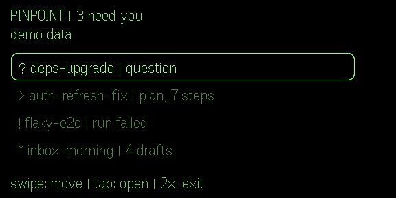
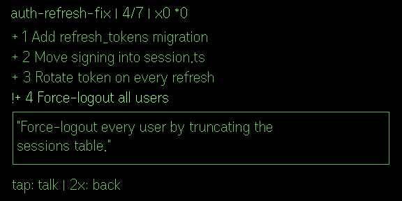
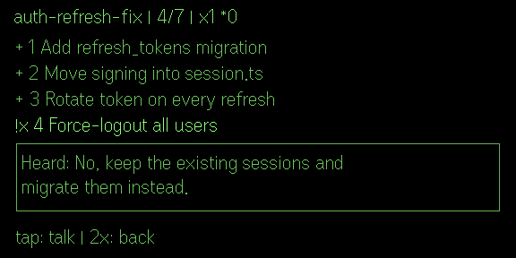

Heads Up hackathon · Nov 2026
Pinpoint.
Ring for where. Voice for what.
Review your AI agents’ work from Even G2 — point by point, with the precision of your laptop.
7-step plan reviewed in 20 s 2 precise corrections 0 laptops
- 1Add session family + rotation columns
- 2Hash stored tokens, keep no plaintext
- 3Unique index stops forked families
- 4Truncate sessions: signs out everyone
- 5Backfill rotated_at for old sessions
- 6Mutex around refreshToken per family
- 7Ship behind a flag, watch 401 rate
“Force-logout every user by truncating the sessions table”
No — migrate existing sessions.
01 Demo
Three minutes, no laptop.
Real simulator, a real T3 Code thread, real Telegram. Captions burned in.
Video render pending — it lands here as media/pinpoint-demo.mp4. The poster above is a stand-in.
02 The difference
Everyone built “approve from your glasses”.
Approval isn’t feedback.
Plan: stop the “logged out mid-edit” 401s
Support has 14 reports this week of being signed out while typing. Sentry shows AuthRefreshError: token already rotated at 3.1k/day, almost all of it from apps/web/lib/auth/refresh.ts. Two tabs refresh the same token at the same moment, one wins, the other gets a 401 and the app clears the session.
1. Add rotation metadata. New columns sessions.family_id and sessions.rotated_at, backfilled from user_id, indexed because every refresh reads it.
2. Hash stored tokens. Store sha256(token) and compare hashes. A database dump then holds no usable refresh tokens.
3. Add a unique index on the session family. A double insert fails loudly instead of silently forking a family and leaving one branch orphaned.
4. Force-logout every user by truncating the sessions table. TRUNCATE sessions CASCADE clears stale rotation rows in one shot. This is irreversible: it ends all active sessions at deploy time.
5. Backfill rotated_at for old rows. Set it to created_at where null, so the grace-window check does not reject sessions that predate the migration.
A wall of text. You’re on a train. You won’t read it.
- 1Add session family + rotation columns
- 2Hash stored tokens, keep no plaintext
- 3Unique index stops forked families
- 4Truncate sessions: signs out everyone
- 5Backfill rotated_at for old sessions
- 6Mutex around refreshToken per family
- 7Ship behind a flag, watch 401 rate
Point 4 flagged high-risk
“No — migrate existing sessions.”
5 points agreed in silence
One line per step. Every line tied to an exact quote.
Same plan. 7 decisions. 20 seconds.
Silence means agree. You only speak when something’s wrong.
03 How it works
Point at the step. Say what’s wrong.
The agent doesn’t need selected words. It needs which point, your verdict, and a short reason.
-
01
Split
AI turns the reply into 4–10 one-line points. Each point is tied to an exact quote from the reply — verified against the source, never invented.
-
02
Point
Ring to move. Silence means agree. Tap, talk, tap to object — one sentence, on the point that’s wrong.
-
03
Send
Pinpoint writes a cited review: objections first, then answers, then agreed points. It lands in the thread and the agent keeps working.
· The review
What lands in the thread
No rewritten prose. Every note sits next to the exact quote it answers, so the agent knows what to change and what to leave alone.
- Objections first, then answers, then agreed.
- Quotes copied verbatim from the reply.
- No LLM in the composer — same input, same message.
Review from G2 (Pinpoint) — 7 points ✗ 4. "Force-logout every user by truncating the sessions table" → No. Migrate existing sessions instead. ✗ 6. "Wrap refreshToken() in a mutex" → Use a request queue; a mutex deadlocks with the retry path. ? 2. "Upgrade to Vite 7 now?" → Stay on 6 for now. ● 5. "Add a 30s timeout" → Make it configurable. ✓ Agreed: 1, 3, 7. Go ahead with the rest of the plan.
Real simulator screens
576 × 288 · native G2 render



04 Companion
The phone fills the two gaps.
The glasses mirror phone notifications, and long technical text lives in Telegram. Same thread, same notes.
-
01
Alerts, mirrored
A thread needs you. The Telegram alert shows up on the glasses while the app is closed.
-
02
The full reply
Every T3 thread gets a topic in Pinpoint Desk, with the complete plan or reply — no 44-character summaries.
-
03
Notes on the sentence
Each objection becomes a quote-reply on the exact sentence it corrects.
-
04
Read on phone
One tap on the glasses posts that point to the topic and returns a link that lands on it.
One private supergroup. One topic per thread.
05 Built with
A small stack you can run tonight.
Glasses for input and display. T3 Code for the agents. Telegram for the phone. The server runs on the Mac that already runs your agents.
- Even G2 + R1
- T3 Code
- Telegram
- Your Mac
- Open source
Simulator-only demo — the whole path runs without hardware.
Read the code on GitHubOne request path
No cloud account · no secrets in the app · demo mode replays fixtures